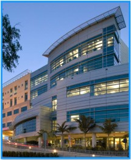

About
Doctors
Contact
FAQ
Avenue Hospital
E-MERCY
Login
Welcome to Avenue Hospital's Website
E-Mercy
Where all your medical needs are satisfied.

About Us
Our Doctors
Contact Us
Frequently Asked Questions
Click on any of the above tabs to begin.